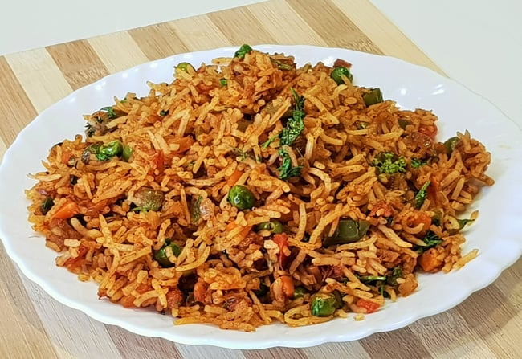

Simple Pulao Recipe
An easy and quick dish, perfect for any meal. This classic pulao combines rice cooked
to perfection, optionally filled with your choice of vegetables, or meats.
Preparation time
- Total: Approximately 20-30 minutes
- Preparation: 10 minutes
- Cooking: 10-20 minutes
Ingredients
- 2-3 bowl rice
- Salt, to taste
- Pepper, to taste
- 1 tablespoon of butter or oil
- Optional fillings: cheese, diced vegetables, panner, cooked meats, herbs
Instructions
- Begin by rinsing 1.5 cups basmati rice in water until it runs clear of starch. Next, soak the rice in enough water for 20 to 30 minutes.
- After 20 to 30 minutes strain the rice of all the water and keep aside.
- While the rice is soaking, prep the veggies. Rinse and chop them. Make sure to chop the vegetables into small cubes.
- Add chopped ginger (1 to 1.5 inches), garlic (4 to 5 small to medium garlic cloves, peeled) and 1 to 2 green chilies (green peppers) in a mortar-pestle.Crush to a paste. You can also use a small grinder for crushing these. Add a bit of water as required if grinding in a small grinder or mixer.
- Fry Spices and Add the rice.
- Mix rice gently with the rest of the ingredients.
- Enjoy: Serve hot, with additional salt and pepper if needed.
Nutrition
The table below shows nutritional values per serving without the additional fillings.
Calories
277kcal
Carbs
0g
Protein
20g
Fat
22g